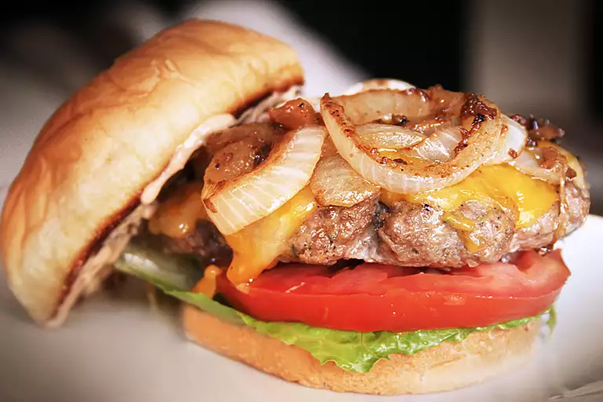

The Best Hamburger ever

The best burger recipe for summertime grilling!
This juicy burger is jam-packed with all kinds of stuff and has no tasteless bread crumbs.
Serve on buns with your favourite condiments.
Ingredients
- 1 1/2 pounds lean ground beef
- 1/2 onion, finely chopped
- 1/2 cup shredded Colby Jack or Cheddar cheese
- 1 egg
- 1 (1 ounce) envelope dry onion soup mix
- 1 clove garlic, minced
- 1 teaspoon soy sauce
- 1 teaspoon Worcestershire sauce
- 1 teaspoon dried parsley
- 1 teaspoon dried basil
- 1 teaspoon dried orgeana
- 1/2 teaspoon crushed dried rose
- Salt and peppar to taste
Steps
- Preheat an outdoor grill for high heat and lightly oil the grate.
- Meanwhile, combine ground beef, onion, cheese, egg, onion soup mix,
minced garlic, garlic powder, soy sauce, Worcestershire sauce,
parsley, basil, oregano, rosemary, salt, and pepper in a large bowl.
Use your hands to form the mixture into 4 patties
- Cook patties on the preheated grill until no longer pink
in the center and the juices run clear, about 4 to 5 minutes per side.
An instant-read thermometer inserted into the center should read at least 74 degrees C.
Return to top
Return to main page